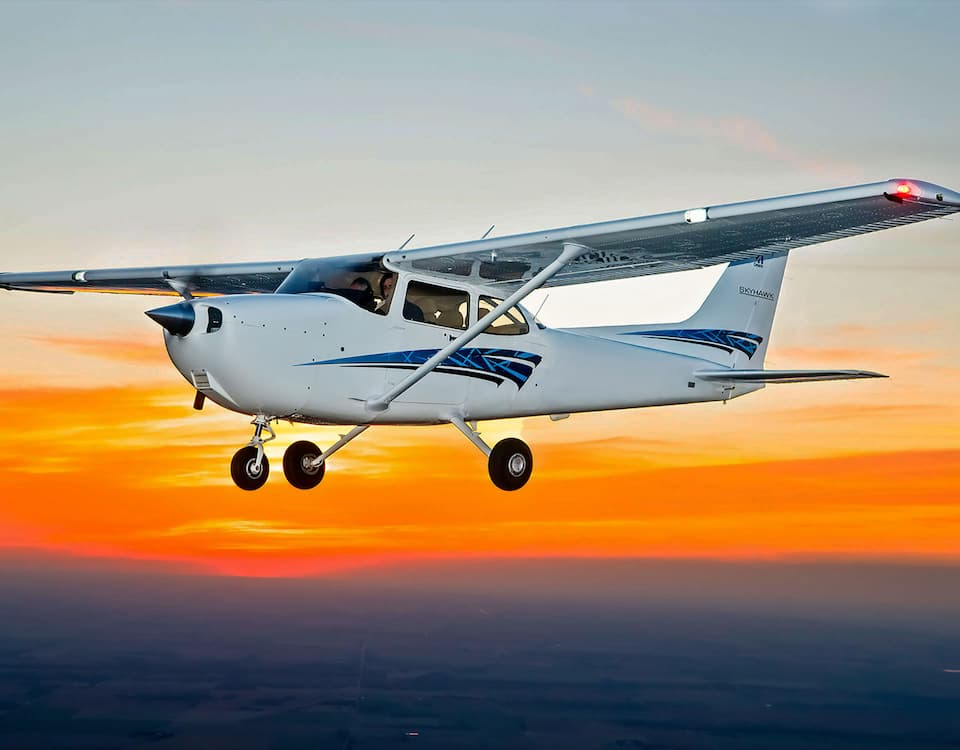
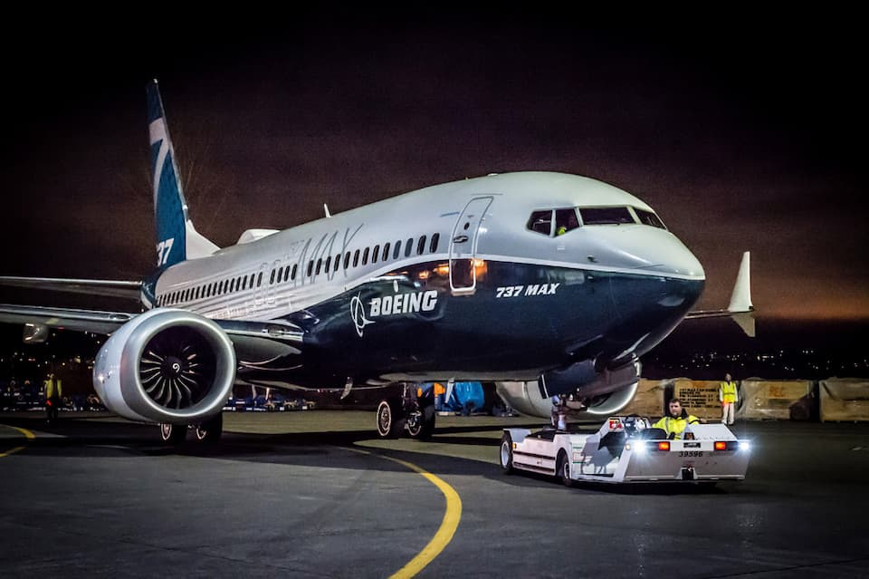

Об учебном центре
Наш учебный центр занимается подготовкой и выпуском виртуальных пилотов с присвоением рейтингов обучения, варьирующихся от первоначальных навыков полетов в сети при получении рейтинга "P1", до рейтинга виртуального пилота, подтверждающего знания и умения к выполнению полетов по ППП (ATPL) на многодвигательных воздушных судах - "P4".
Об учебных курсах
Р1 - Private pilot licence (PPL)
P1 - это основополагающий рейтинг, требующий от пилота базовых знаний по программе обучения PPL (пилота частной авиации), и включающий, углубленную теоретическую часть по принципам эксплуатации одномоторных легких воздушных судов. При изучении данного цикла курса, пилот получит базовые знания о принципах аэродинамики и динамике полета воздушного судна, основ навигации и системах навигационного обеспечения. Выполнит ряд практических занятий по управлению воздушным судном при различных условиях полета. Результатом присвоения данного рейтинга является демонстрация студентом навыка управления выбранным типом ВС и его систем в нормальной полетной конфигурации без использования систем автоматического управления.
Р2 - Instrument rating (IR)
P2 - Программа подготовки на рейтинг, требующий от пилота базовых знаний рейтингов Basic Vatsim Member и P1, и включающий углубленную теоретическую часть по принципам эксплуатации легких воздушных судов, при условиях выполнения полетов по правилам ППП. При изучении данного цикла курса, пилот получит основные знания о принципах правил полетов по приборам, использования навигационных систем, систем навигационного обеспечения. Выполнит ряд практических занятий по управлению воздушным судном при различных условиях полета. Результатом присвоения настоящего рейтинга является демонстрация студентом навыка управления выбранным типом ВС и его систем в нормальной полетной конфигурации, как в ручном, так и в автоматическом режиме полета.

Р3 - Commercial multi-engine pilot licence (CMEL)
P3 - Программа подготовки пилотов на рейтинг включает базовые принципы предыдущих рейтингов с углубленным изучением теоретического материала и практической подготовки на допуск выполнения полетов в качестве пилота коммерческой авиации. Основное направление программы ориентировано на лекционные занятия и выполнение практических полетов по правилам ППП на многодвигательных летательных аппаратах под руководством пилотов-инструкторов. Получение рейтинга P3 осуществляется путем сдачи практического экзаменационного полета на выбранном типе ВС, согласно программе подготовки летного состава.

Р4 - Airline transport pilot licence
P4 - Программа завершающего этапа подготовки пилотов. Программа подготовки пилотов на рейтинг P4 включает базовые принципы предыдущих рейтингов с углубленным изучением теоретического материала и практической подготовки на допуск выполнения полетов в качестве пилота линейной авиации. Основное направление программы ориентировано на лекционные занятия и выполнение практических полетов по правилам ППП на многодвигательных сухопутных воздушных судах под руководством пилотов-инструкторов. Получение рейтинга P4 осуществляется путем сдачи практического экзаменационного полета на выбранном типе ВС, согласно программе подготовки летного состава.
Что нужно для начала обучения
-
1Раз
-
2Два
-
3Три
Если Вы отвечаете данным требованиям, то можете оставить заявку на обучение. После её заполнения напишите в канал training-pilots дискорда VATRUS о том, что Вы готовы пройти первоначальное собеседование.
Наша статистика
Документы
Рейтинг ближе, чем кажется!